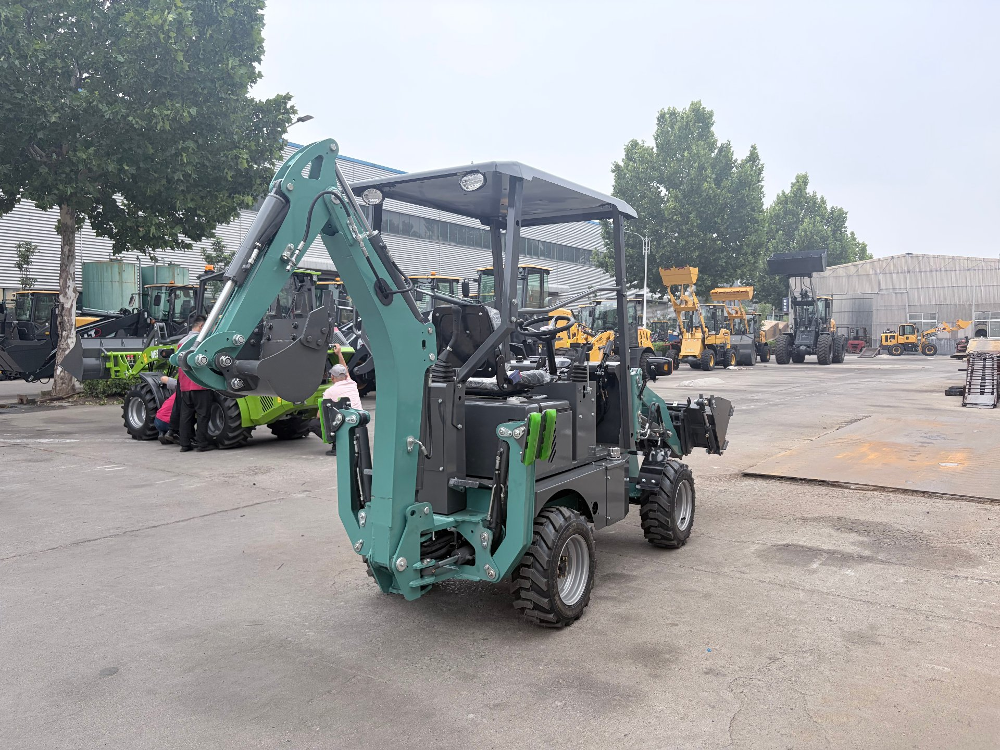
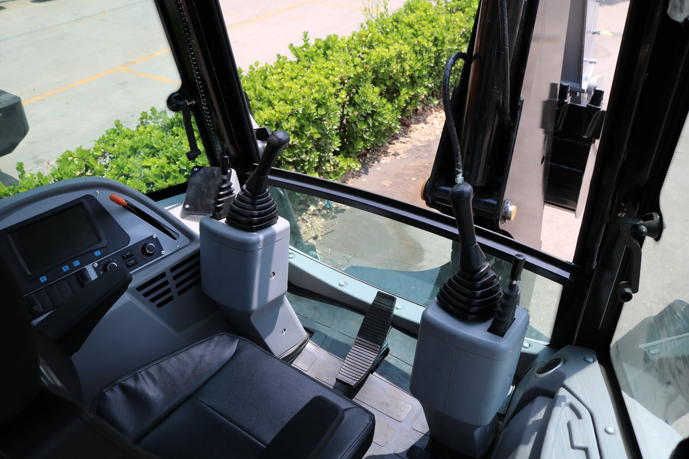

This is the yard outside our workshop — machines that have actually been assembled, parked where you could walk up and touch them. A rented showroom can mimic a lobby; it cannot fake a yard full of real machines.
Why Photos Prove Almost Nothing
Let me start with the uncomfortable truth: a photograph proves a place existed at some moment. It does not prove the supplier made anything, that the machine they are quoting is theirs, or that the building belongs to the people you are emailing.
- A rented showroom looks like a factory on camera. A tidy display with a logo wall photographs beautifully — and tells you nothing about where machines are built.
- Stock and scraped photos circulate. I have seen the same "factory" photo used by three different companies. A quick reverse-image search will often expose it, but most buyers never try.
- A cloned website is cheap. Someone can lift a real factory's photos, copy its logo, and register a near-identical domain. This is exactly the trap I warn about in my payment safety guide — a mismatched bank name is the biggest red flag of all, and it is often first spotted through a video call that never happens.
So photos are a starting point, not proof. The proof is movement: a machine running, a worker in an apron, a crane actually overhead, parts stacked in a bay. That is what video gives you.
The Three-Step Method: Look, Ask, Record
Do not go into a factory video call cold. Run it like a small audit with three passes:
- Look — where does the camera actually go? Does it stay in a showroom, or does it move through production, the parts store, and the loading yard?
- Ask — can they react to the unexpected? Ask to see something specific, or to answer a question on the spot. A front has a script; a real operation is comfortable being approached from a new angle.
- Record — what do you walk away with? Screenshots, a saved call, and ideally a short clip of your targeted machine running. This becomes the evidence behind your final payment.
What to Ask Them to Show You
The camera should do more than point at a nice machine. Walk it through the things that are hard to stage:
- The production floor, not the showroom. Ask to see where machines are assembled — welding, wiring, sub-assembly. An active line is hard to fake for long.
- A specific machine's serial number. Point to the plate on the frame and read it on camera. Cross-check that number against the quote and later the shipping documents.
- The parts warehouse. A supplier who stocks service parts is a supplier planning to support you after the sale — not one who wants the money and forgets your phone number.
- The loading area and a machine being prepped. Export packing, shrink wrap, a container being loaded. This is where the machine physically starts its journey to you.
- People who actually work there. Not just the sales manager — a worker who can answer a basic question about the machine proves the operation is real and run by people who know it.
- Proof of today. This is my favourite trick: ask them to hold up a handwritten note with today's date, or move the camera to a calendar forecast, or start the machine's hour meter on camera. It instantly tells you this is live, not a pre-recorded tour.

Ask them to open the cab and show you what the operator actually sees — the joysticks, the seat, the view out the window. It is the moment a stock-room salesman gets uncomfortable and a real manufacturer gets comfortable.
What to Ask Out Loud
The questions matter as much as the visuals. Ask things that force a real, unscripted answer:
- Ask to see the exact machine you are quoted — not "a machine like it." A real factory has yours in the build queue; a front has one machine and a hundred photos.
- Ask a technical question you already half-know the answer to. For example, "what axle configuration is this model?" Watch whether they answer confidently or deflect. In my guide to choosing a manufacturer, I describe the live floor-walk test — the same idea applies on a call.
- Ask them to turn the camera yourself. Say "can you walk toward the back of the building?" A genuine factory has no reason to control where you look.
- Ask about spare parts and warranty in the same session. A factory that can point to a shelf of parts and a written warranty is a supplier with a plan. This ties straight into how you should structure payment.
What to Record and Keep
You cannot hold a factory to a memory. Before the call, decide what you are going to walk away with, and keep it:
- Record the call or request a highlight clip. Most meeting platforms let you record with consent. At minimum, ask the supplier to send you a short video of the machine running with the serial number visible.
- Screenshot the serial number and any spec labels. These become part of your evidence file and can be matched against the bill of lading later.
- Save the chat or the walkthrough clip. When the machine arrives different from what you ordered, the recording is the evidence that decides the outcome — I cover the inspection side in my pre-shipment inspection checklist.
- Keep the spec sheet you were quoted. The video should match the sheet, line by line.
The Red Flags That Should End the Call
- Excuses for why the camera cannot go to the workshop. "It is busy," "it is off-limits," "we will send photos later." A real factory walks the floor by default.
- A pre-recorded "live" call. If the answers feel queued and the camera never really moves, treat it with suspicion.
- Only the showroom, always the showroom. If every route leads back to the display area, they are showing you a set, not a factory.
- A rushed tour. Someone who controls your attention and the clock is usually hiding the parts of the place that matter.
- No serial number, or refusing to show a specific unit. You are quoting to a real machine; they need to be able to point at it.
None of these alone proves a scam, but together they are the difference between a factory and a front. And when you are deciding whether to send money, you want the weakest thing you have to be the invoice — not the evidence.
What it really costs: a video call is free. A third-party inspection runs a few hundred dollars. Getting on a plane and seeing it yourself is well over two thousand. Video verification is the cheapest high-value check on the entire list — and the one most buyers skip.
How I Run It From the Factory Side
I will be honest about my own bias: I work inside a factory, so I see the innocent version of this every day. When a buyer asks me for a live walkthrough, I am glad — because a real manufacturer has nothing to hide and everything to gain. On a call I will walk the production line, open the cab and engine bay, point out the serial plate, show you the parts shelf, and start the machine in front of you. I would rather you check me carefully than buy on trust and regret it.
That willingness is the point. Do not look for a supplier who acts comfortable — look for one who is comfortable being checked. The two are not always the same thing.
The Point of All This
Here is what I keep coming back to. Money can be sent in five minutes, but trust should not be granted that fast — and a video call is the cheapest way to slow it down enough to be sure. You are not being paranoid to ask for a live walkthrough. You are being smart.
And from my side of the camera, I will say this plainly: I have never once minded a buyer checking me carefully. Ask for the serial number, ask me to open the engine hood, ask me to start the machine in front of you, ask me a question I have to think about. The minutes you spend verifying me are the cheapest insurance on the whole deal — from a manufacturer who is happy to be checked, you get exactly what you need: proof.
When you are ready, I will walk you through our factory and the machine you are actually considering — not a showroom lookalike, the real one. Everything I have described in this guide is a standing invitation, not a sales pitch.
Verify Me Before You Pay Anything
I would rather walk you through the factory on a video call and answer your hardest questions than get a sale on trust. Send me the model you are considering and I will set up a live walkthrough plus a written quotation — so you know the factory is real and the machine is right before a cent moves.
WhatsApp Vivian for a Live Walkthrough